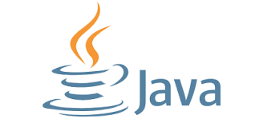

Java
История
") Изначально язык назывался Oak («Дуб»), разрабатывался Джеймсом Гослингом для программирования бытовых электронных устройств. Из-за того, что язык с таким названием уже существовал, Oak был переименован в Java. Назван в честь марки кофе Java, которая, в свою очередь, получила наименование одноимённого острова (Ява), поэтому на официальной эмблеме языка изображена чашка с горячим кофе. Существует и другая версия происхождения названия языка, связанная с аллюзией на кофемашину как пример бытового устройства, для программирования которого изначально язык создавался. В соответствии с этимологией в русскоязычной литературе с конца двадцатого и до первых лет двадцать первого века название языка нередко переводилось как Ява, а не транскрибировалось.
В результате работы проекта мир увидел принципиально новое устройство, карманный персональный компьютер Star7, который опередил своё время более чем на 10 лет, но из-за большой стоимости в 50 долларов не смог произвести переворот в мире технологии и был забыт.
Устройство Star7 не пользовалось популярностью, в отличие от языка программирования Java и его окружения. Следующим этапом жизни языка стала разработка интерактивного телевидения. В 1994 году стало очевидным, что интерактивное телевидение было ошибкой.
С середины 1990-х годов язык стал широко использоваться для написания клиентских приложений и серверного программного обеспечения. Тогда же определённое распространение получила технология Java-апплетов — графических Java-приложений, встраиваемых в веб-страницы; с развитием возможностей динамических веб-страниц в 2000-е годы технология стала применяться редко.
В веб-разработке применяется Spring Framework; для документирования используется утилита Javadoc.
Изначально язык назывался Oak («Дуб»), разрабатывался Джеймсом Гослингом для программирования бытовых электронных устройств. Из-за того, что язык с таким названием уже существовал, Oak был переименован в Java. Назван в честь марки кофе Java, которая, в свою очередь, получила наименование одноимённого острова (Ява), поэтому на официальной эмблеме языка изображена чашка с горячим кофе. Существует и другая версия происхождения названия языка, связанная с аллюзией на кофемашину как пример бытового устройства, для программирования которого изначально язык создавался. В соответствии с этимологией в русскоязычной литературе с конца двадцатого и до первых лет двадцать первого века название языка нередко переводилось как Ява, а не транскрибировалось.
В результате работы проекта мир увидел принципиально новое устройство, карманный персональный компьютер Star7, который опередил своё время более чем на 10 лет, но из-за большой стоимости в 50 долларов не смог произвести переворот в мире технологии и был забыт.
Устройство Star7 не пользовалось популярностью, в отличие от языка программирования Java и его окружения. Следующим этапом жизни языка стала разработка интерактивного телевидения. В 1994 году стало очевидным, что интерактивное телевидение было ошибкой.
С середины 1990-х годов язык стал широко использоваться для написания клиентских приложений и серверного программного обеспечения. Тогда же определённое распространение получила технология Java-апплетов — графических Java-приложений, встраиваемых в веб-страницы; с развитием возможностей динамических веб-страниц в 2000-е годы технология стала применяться редко.
В веб-разработке применяется Spring Framework; для документирования используется утилита Javadoc.
Версии Джавы, дата выхода и их кодовое имя в процессе разработки
| версия |
год выпуска |
кодовое имя |
| Giorgadze.georgia |
| JDK 1.0 | 21 января 1996 | - |
| JDK 1.1 | 19 февраля 1997 | - |
| J2SE 1.2 | 8 декабря 1998 | Playground |
| J2SE 1.3 | 8 мая 2000 | Kestrel |
| J2SE 1.4 | 6 февраля 2002 | Merlin |
| J2SE 5.0 | 30 сентября 2004 | Tiger |
| JSE 6 | 11 декабря 2006 | Mustang |
| JavaFX | 8 октября 2013 | Dolphin |
| Java ME Embedded | 10 октября 2013 | Micro Edition |
| Java SE 7 | 28 июля 2011 | Dolphin |
| Java SE 8 | 19 марта 2014 | Octopus |
| Java SE 9 | 21 сентября 2017 | - |
| Java SE 10 | 20 марта 2018 | - |
| Java SE 11 | 25 сентября 2018 | - |
| Java SE 12 | 19 марта 2019 | - |
| Java SE 13 | 17 сентября 2019 | - |
| Java SE 14 | 17 марта 2020 | - |
| Java SE 15 | 15 сентября 2020 | - |
| Java SE 16 | 16 марта 2021 | - |
| Java SE 17 | 14 сентября 2021 | - |
| Java SE 18 | 22 марта 2022 | - |
| Java SE 19 | 20 сентября 2022 | - |
| Java SE 20 | 21 марта 2023 | - |
| Java SE 21 | 19 сентября 2023 | - |
Краткий обзор
Java — строго типизированный объектно-ориентированный язык программирования общего назначения, разработанный компанией Sun Microsystems (в последующем приобретённой компанией Oracle). Разработка ведётся сообществом, организованным через Java Community Process; язык и основные реализующие его технологии распространяются по лицензии GPL. Права на торговую марку принадлежат корпорации Oracle.
Приложения Java обычно транслируются в специальный байт-код, поэтому они могут работать на любой компьютерной архитектуре, для которой существует реализация виртуальной Java-машины. Дата официального выпуска — 23 мая 1995 года. Занимает высокие места в рейтингах популярности языков программирования (2-е место в рейтингах IEEE Spectrum (2020) и TIOBE (2021)).
Пример кода

import javax.imageio.ImageIO;
import java.awt.*;
import java.awt.image.BufferedImage;
import java.io.File;
import java.io.IOException;
public class Main {
public static void main(String[] args) {
String inputFilePath = "C:\\Users\\temu1\\IdeaProjects\\Lab5Graph\\src\\examle.bmp";
String outputFilePathFor45 = "C:\\Users\\temu1\\IdeaProjects\\Lab5Graph\\src\\output45_2.bmp";
String outputFilePathFor90 = "C:\\Users\\temu1\\IdeaProjects\\Lab5Graph\\src\\output90_2.bmp";
try {
BufferedImage image = ImageIO.read(new File(inputFilePath));
double angle45 = Math.toRadians(45);
BufferedImage result45 = rotateImage(image, angle45);
ImageIO.write(result45, "bmp", new File(outputFilePathFor45));
System.out.println("Файл успешно обработан и сохранен: " + outputFilePathFor45);
double angle90 = Math.toRadians(90);
BufferedImage result90 = rotateImage(image, angle90);
ImageIO.write(result90, "bmp", new File(outputFilePathFor90));
System.out.println("Файл успешно обработан и сохранен: " + outputFilePathFor90);
} catch (IOException e) {
e.printStackTrace();
}
}
private static BufferedImage rotateImage(BufferedImage image, double angle) {
double sin = Math.abs(Math.sin(angle));
double cos = Math.abs(Math.cos(angle));
int w = image.getWidth();
int h = image.getHeight();
int neww = (int)Math.floor(w*cos+h*sin);
int newh = (int)Math.floor(h*cos+w*sin);
BufferedImage result = new BufferedImage(neww, newh, BufferedImage.TYPE_INT_ARGB);
Graphics2D g = result.createGraphics();
g.translate((neww-w)/2, (newh-h)/2);
g.rotate(angle, w/2, h/2);
g.drawRenderedImage(image, null);
return result;
}
}
")
Сайты использующие Java
- YouTube
- Amazon
- Ebay
- Twitter(X)
Приложения использующие Java
- ThinkFree Office
- Blu-ray BD-J
- NASA World Wind
- Minecraft
- JPC
Преимущества джава перед другими языками
- кросс-платформенность
- объектно-ориентированность
- безопасность
- автоматическое управление памятью
- стабильность
- богатая стандартная библиотека
- масштабируемость
- многопоточность
- большое сообщество
- проверенная временем